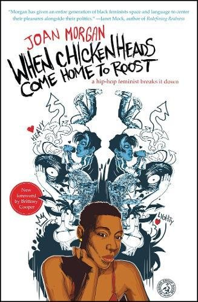

"When Chickenheads Come Home To Roost" Book Review

I love books that help us to understand ourselves and share our experiences. I enjoyed how Joan Morgan opened us up for discussion, clearing the air and making room for our voices. Nonetheless,
I disliked the very points in this testament that I disliked in Brittany Cooper's "Eloquent Rage". Both these books make a point to glorify intimate relationships, which takes up a lot of space, and they house the spirit of elitism which this author attempted to avoid but ultimately.. failed. I would like to think the main point of feminism is to afford women the freedom to be individuals and to be evaluated on a case by case basis. This is including, but not limited to, being freed from the discrimination bred by a man's limited perspective and freedom from subjugation due to his inability to see our value. I did appreciate this book in some ways and i believe we all wanted to love it but I finished this book feeling more frustrated than liberated.
She begins by explaining how black women in knowing the hardships that have forced many black men into toxicity, should love and support them from a distance without always inviting them for intimacy..
...she should've stopped there.
She goes on to discuss how the black family is broken, the lessons her mother gave her on relationships, and whether men should also have rights to unborn children.
She was beginning to catch on to something, but definitely no Hook.
Black feminist are tasked with maintaining an allegiance to black lives matter, a movement which holds it's protests with the strength of black women at its foundation but places her secondary more often than equal. These are the matters I was hoping the author would address with some deviation. I was disappointed that she encouraged woman to stroke the egos of men as long as it proves to be a mutual benefit. This includes the argument to allow a man to pay the bill because, if you paid, he wouldn't feel like he was a man. I thought the entire point of feminism was to effectively say "I shouldn't have to be less of me for you to be more of you". If you want to let your man pay for dinner because you're:
selfish,
broke,
or want to be appreciated,
then power to you!
BUT if you let your man pay for dinner simply because he would be emasculated by not doing so, or for the fear of being viewed as masculine yourself, then expect to subjugated to his masculinity for the duration of the relationship. The latter portion of this book is all about compromises with men of this sort. Women that are on this side of the field will compromise because they feel like being themselves runs the, already limited availability of, men away.. and it does. But should we allow the crippling fear of being single to hoax us into compromises with men that compromise ourselves? Naaah. Paying for dinner is not apart of who i am but if allowed to roam, where will this man's limited mind state lead you? Suppression and servitude. The solution is not to compromise with these men but to stop attributing so much of your self value to maintaining intimate monogamous relationships. Intimacy is not a cause for which you should sell your soul for BUT, i digress.
With the reverence this book was given I expected much more representation and direction. With that being said, this is a subject matter that is not easily tackled by any one person but requires a team of insightful black women to conquer. I look forward to exploring the abundance of perspectives on black feminism written by other authors.
Will you stroke his ego? let me know below.